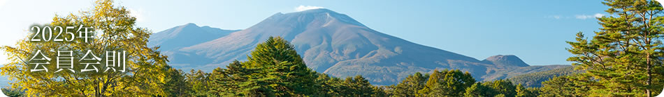

お申込み前に必ずお読みください。
| 第1章 | 総則 |
|---|---|
| 第1条 | 本会は「CLUB72」と称し、「年度制」の会とする。 |
| 第2条 | 本会はゴルフを通じて会員相互の親睦、技術の向上、品位高揚、エチケット・マナーの習得を図ることを目的とする。 |
| 第3条 | 本会は軽井沢72ゴルフ内に事務局を置く。 |
| 第2章 | 会員 |
| 第4条 | 本会は軽井沢72ゴルフ、軽井沢 浅間ゴルフコース、馬越ゴルフコースを利用するアマチュアゴルファーによって構成される。 |
| 第5条 | 本会への入会申込書に対して事務局（資格審査委員会）が所定の審査を行い、会員と しての適格性を判断したうえで入会手続きにしたがって申込みの受付を行う。 |
| 第6条 | 本会に入会する場合、入会金￥11,000（消費税込）と年会費￥30,500（消費税込）を納入しなければならない。また、翌年度からの自動継続決済（SEIBU PRINCE CLUBカード セゾンまたはゴールドに限定したクレジットカード決済）への申込みを必須とし、年会費納入後速やかに登録を完了させなければならない。入会翌年度以降年会費を自動継続決済した場合は、入会金￥11,000（消費税込）を免除とする。 |
| 第7条 | 本会は入会者に対して会員証・スタンプカードを発行する。 |
| 第8条 | 会員は第14条の特典を受けようとする場合は受付時に会員証を利用施設のフロントに必ず提示しなければならない。提示のない場合は特典を受けられないものとする。 |
| 第9条 | 会員証は他人に貸与もしくは譲渡することはできない。 |
| 第10条 | 本会に入会した会員は入会翌年度以降の年会費をセゾンカード規約に基づきSEIBUPRINCE CLUBカード セゾンまたはゴールドで年会費を支払うこととする。またクレジットカード（または口座振替※1）による継続決済に登録された会員は以後自動更新とする。 ※1クレジットカード発行のご希望に沿えない場合に限り、口座振替手続きを可能とする。ただし、口座振替手数料は別途。 ①都合により退会する場合は、満了3ヶ月前（12/28）までに軽井沢72ゴルフ内事務局に所定の「退会届」を届けなければならない。また、継続手続後、会員の死亡または病気、身体障害、その他諸事情により退会する場合は、年度開始日から30日以内に「退会届」を提出しかつ当年度に利用が一切ない場合に限り、年会費を返金する。 ②カード会社により軽井沢72ゴルフ内事務局に申し出たカード番号、有効期限が更新された場合であっても年会費を異議なく支払うこと。 ③カード会社から年会費カード決済を取消、解除されても軽井沢72ゴルフ内事務局に異議を申し立てないこと。 |
| 第11条 | 会員は以下のいずれかに該当する場合は会員の資格を失う。 ①会員が脱会の意思表示をした場合。 ②本会の名誉を毀損し、または秩序を乱した場合。 ③会員の特典を不正に使用した場合。 ④会員証の有効期限が切れた場合。 ⑤会員が暴力団・反社会的勢力と一般に認められる団体もしくはその構成員であることが判明し、または暴力団等と関係があることが判明した場合。 ⑥事務局において資格の停止または退会勧奨、除名が適当と認めるとき。 |
| 第12条 | 会員がプレーをする場合はあらかじめ予約を必要（馬越ゴルフコースは除く）とする。 予約状況によってはお断りする場合がある。ご予約の全部、または一部を解除された場合、違約金を申し受ける場合がある。 |
| 第13条 | インターネット予約をされた場合、当ゴルフ場ホームページ（http://www.princehotels.co.jp/golf/index.html）を経由した予約のみ会員料金を適用する。 |
| 第3章 | 特典 |
| 第14条 | 会員は次の特典を受けることができる。 1.軽井沢72ゴルフ、軽井沢 浅間ゴルフコース、馬越ゴルフコースを会員料金で利用することができる。 2.軽井沢72ゴルフ開催の会員コンペにご参加いただけます。 3.軽井沢72ゴルフ/ラウンドセルフプレーを進呈 ご本人のみ有効となります。4月〜11月の期間有効 ①軽井沢72ゴルフ西・南コース/ラウンドセルフプレー1名さま ￥5,000（平日・休日限定） ②軽井沢72ゴルフ東コース/ラウンドセルフプレー1名さま ￥7,000（平日・休日限定） ※別途利用税がかかります。 4.会員特典チケットを進呈 ① レストランにてお食事を1品選べるチケット…3枚 軽井沢72ゴルフ、軽井沢 浅間ゴルフコース のいずれかプレーされたゴルフ場のレストランで当日に限りご利用いただけます。（同伴者利用可） ※軽井沢 浅間ゴルフコースは限定メニューとなります。また、イベントなどでご利用いただけない日もございますので事前にご確認ください。 ②軽井沢72ゴルフチョイスチケット A 下記の（1）〜（3）より1つお選びいただけます。 …3枚 （1）軽井沢72ゴルフ レストラン ワンドリンク券 （2）軽井沢72ゴルフ 売店ペットボトル飲料（1本） （3）軽井沢72ゴルフ 西クラブハウス練習場または軽沢ゴルフ練習場 …メダル2枚 ③軽井沢72ゴルフチョイスチケット B 下記の（1）〜（4）より1つお選びいただけます。 …5枚 （1）軽井沢72ゴルフ フェアウェー乗り入れ無料（乗り入れ可能日のみ有効） （2）軽井沢72ゴルフ 特定日の2バッグ割増無料（1枚につきご本人のみ有効） （3）軽井沢72ゴルフ同伴者会員料金適用（全日有効）※1週あたり1枚（予約で複数枚利用可）。（特別プランなどは適用外） （4）軽井沢72ゴルフ軽井沢給油所（水曜日定休） ガソリン・軽油いずれかを5ℓ給油またはシャンプー洗車1回分無料（セルフコース・拭上げ車内清掃無し） 5. 2～3バッグセルフプレーの割増が無料 ※軽井沢72ゴルフのキャディー付きプレーおよび特定日の1～2バッグセルフプレーを除く ※軽井沢72ゴルフで特定日に2バッグセルフプレーの場合は1名さまにつき￥3,000の割増料金を頂戴いたします。 ※1バッグでのご利用は割増料金を頂戴いたします。 6.スタンプカードシステム ①軽井沢72ゴルフ、軽井沢 浅間ゴルフコースはプレー1回につき、9ホールの場合は1個、18ホールの場合は2個のスタンプを押印する。 （追加ラウンドも押印可） ②馬越ゴルフコースはプレー1回につき、18ホール単位で1個押印する。（例：9ホールプレーの場合は押印なし、27ホールプレーの場合は1個押印） ③スタンプカードに10個押印を達成するとワンドリンク券、20個押印で昼食券、30個押印で次回のプレーフィーを招待とする。ただし、ロッカーフィー、補償料、ゴルフ振興金（対象コースのみ）、ゴルフ場利用税、キャディーフィーは別途。 ※プレーフィー招待、1ラウンドセルフプレー￥1,000券～￥7,000券などをご利用場合はスタンプの押印はしない。 ※会員はプレー当日、受付時にスタンプカードを提示する。提示のない場合、押印はしない。（後日の押印は認めない） 7.晴山ゴルフ場をご利用でスタンプを3個押印 ご本人のみ有効。各種、優待券をご利用の場合はスタンプカード押印の対象外になります。 ※晴山ゴルフはご優待料金がございます。詳しくはお問合せください 8.軽井沢・プリンスショッピングプラザ駐車場無料 ＊プレー当日（24時まで）に限り有効。 9.下記施設を優待料金にてご利用いただけます。 ①軽井沢ゴルフ練習場が会員本人1メダル200円引きで利用することができる。 ②軽井沢ゴルフ練習場パターコースが会員本人500円引きで利用することができる。 ③立ち寄りの湯 千ヶ滝温泉が会員本人100円引きで利用することができる。（レンタルタオル別途 小100円、大200円） ④軽井沢プリンスボウルが会員本人100円引きで利用することができる。（貸靴代別途 1足400円） 10.パサージュ琴海アイランドゴルフクラブ（長崎県）を優待料金で利用することができる。 ※THE CLUB72 PREMIUMメンバーは1～8の特典に別途追加の内容がございます。 ※特典内容は変更となる場合がございます。 |
| 第4章 | 附則 |
| 第15条 | 会員の有効期間は入会日より翌年3月31日（冬季クローズ期間を含む）とする。 |
| 第16条 | 本会則に定めのない事項については本会事務局が決定する。 |
個人情報取扱いに関する同意条項
「CLUB72」（以下「本会」という）への申込者（以下入会後申込者が会員となった場合を総称して 「会員」という）は、以下の内容に同意のうえ申込みます。
| 第1条 | 同意 （1）会員は本会を運営する軽井沢72ゴルフ（以下「当ゴルフ場」といいます）が下記の個人情報を下記の目的のために、収集・利用することに同意します。 ［収集・利用する個人情報］ ①入会申込書に会員が記載した会員の氏名、年齢、生年月日、住所、電話番号、Eメールアドレス、勤務先等、及び申込書以外で申込者が当ゴルフ場に届出た事項 ②入会申込書に会員が記載した会員のクレジットカード番号、有効期限 ［利用目的］ 上記①の個人情報 （ⅰ）本会の入会手続及び管理 （ⅱ）当ゴルフ場が提供するサービス及びその他事業に関する、サービス提供、宣伝物・印刷物の送付等の営業案内 上記②の個人情報 （ⅰ）本会の年会費決済 （2）会員は、上記［利用目的］（ⅱ）の利用について、中止の申し出ができます。 |
|---|---|
| 第2条 | 業務委託 当ゴルフ場が本会の運営業務の一部又は全部を、当ゴルフ場の委託先企業に委託する場合に、当ゴルフ場が個人情報の保護措置を講じた上で、前条（1）により収集した個人情報を当ゴルフ場 委託先企業に提供し、当該委託先企業が受託の目的に限って利用する場合があります。 |
| 第3条 | 問合せ窓口 当ゴルフ場の保有する個人情報に関するお問い合わせや、開示・訂正・削除の申し出、その他ご意見の申し出に関しましては、下記連絡先までお願いします。 軽井沢72ゴルフ内事務局 TEL:0267-48-0072 |
| 第4条 | 条項の変更 本同意条項は、当ゴルフ場所定の手続きにより変更することができます。 |
会員料金について共通のご案内
①料金には1名さまの18ホール（馬越ゴルフコースは9ホール）のプレーフィー（グリーンフィー、乗用ゴルフカーフィーまたは手引きカートフィー〈キャディー付きの場合はキャディーフィーも含む〉、諸経費〈馬越ゴルフコースは除く〉、利用税、消費税）が含まれております。
②別途、ロッカーフィー￥330、補償料￥35、ゴルフ振興金￥50（対象コースのみ）がかかります。
【2025年度特定日】4/27～5/5・7/19・7/20・8/9～8/16・9/13・9/14・11/10・10/12・11/1・11/2・11/22・11/23